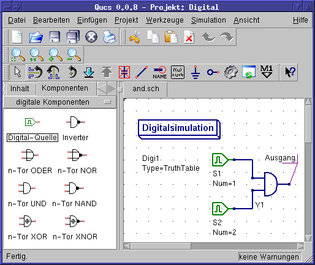

- Qucs -
Ziemlich Universeller Schaltungssimulator
Erste digitale Schritte
Qucs ist auch eine grafische Benutzeroberfläche für die
Durchführung von digitalen Simulationen. Dieses Dokument
enthält einen kurze Beschreibung, wie dies vonstatten geht.
Qucs verwendet das Programm FreeHDL
(http://www.freehdl.seul.org),
um digitale Simulationen durchzuführen. Das bedeutet, dass sowohl das
FreeHDL-Packet, als auch der GNU C++ Compiler auf dem Computer
installiert sein müssen.
Der Unterschied zwischen analogen und digitalen Simulationen ist nicht
sehr groß. Falls also Erste Schritte bereits
gelesen wurde, ist es jetzt recht einfach, auch eine digitale Simulation
zum Laufen zu bringen.
Es soll beispielhaft die Lokigtabelle eines einfachen logischen UNDs
berechnet werden. Mit Hilfe der digitalen Komponenten in der Kombobox
des Komponenten-Reiters auf der linken Seite sollte es gelingen, den
Schaltplan, der in Abbildung 1 zu sehen ist, nachzubauen. Der
Digitalsimulations-Block kann unter den anderen Simulationen gefunden
werden.
Die Digitalquellen S1 und S2 sind die Eingänge, der
Knoten mit der Bezeichnung Ausgang ist der Augang. Nach dem
Starten der Simulation öffnet sich die Seite für die
Datenvisualisierung. Das Diagramm Logiktabelle wird darauf
platziert und die Variable Ausgang anschließend
eingefügt. Jetzt wird die Logiktabelle eines UNDs mit zwei
Eingängen angezeigt. Gratulation, die erste Digitalsimulation
ist fertig!

Abbildung 1 - Qucs Hauptfenster
Die Logiktabelle ist nicht die einzige Digitalsimulation, die Qucs
durchführen kann. Es ist weiterhin möglich, ein beliebiges Signal
in einen Schaltkreis einzuspeisen. Die Ausgangssignale können dann
mit Hilfe eines Zeitdiagramms angezeigt werden. Um das zu erreichen,
muss der Parameter Type des Simulations-Blocks auf TimeList
gesetzt werden und die Zeitdauer der Simulation in den darauf folgenden
Parameter eingetragen werden. Die Digitalquellen haben jetzt eine
andere Bedeutung: Sie geben eine beliebige Bitsequenz aus, indem
ein Ausgangszustand, das erste Bit, (low oder high) und eine Liste
von Zeiten, an denen der Zustand gewechselt werden soll, definiert
wird. Es ist zu beachten, dass diese Liste nach derem Ende
wiederholt wird. Um ein 1GHz Taktsignal mit einem Tastverhältnis
von 1:1 zu erzeugen, sieht die erwähnte Liste so aus: 0.5ns; 0.5ns
Um sich die Ergebnisse dieser Simulationsart anzusehen, gibt es den
Diagrammtyp Zeitverlaufsdiagramm. Darin können die
Ergebnisse aller Knoten Zeile für Zeile angezeigt werden. Viel
Spaß dabei...
zurück nach oben